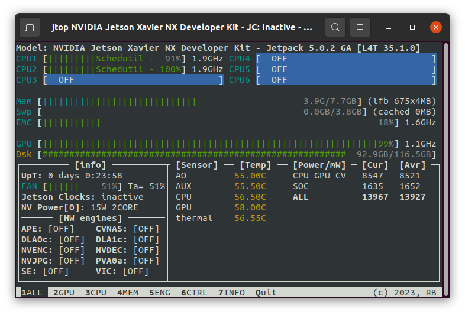
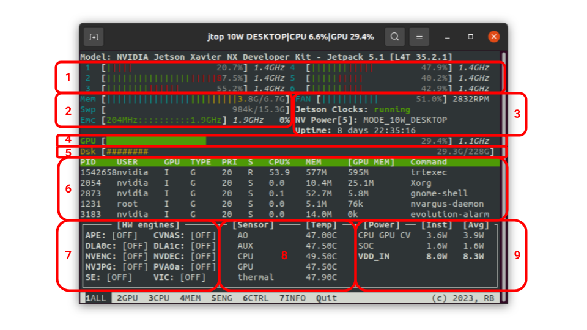
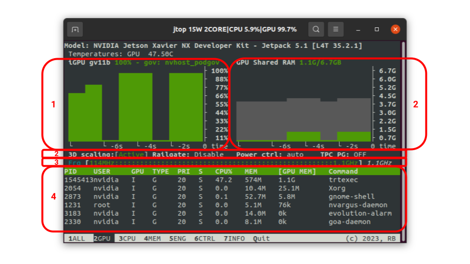
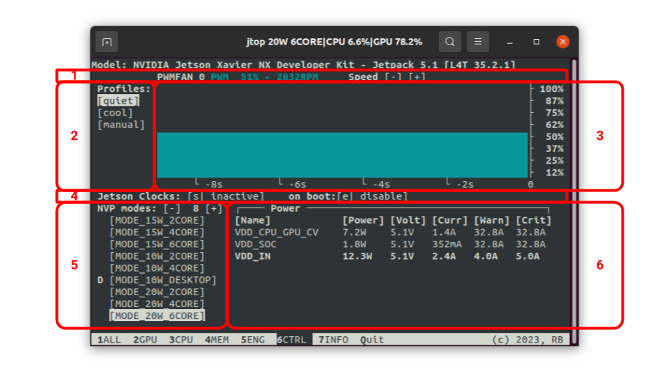
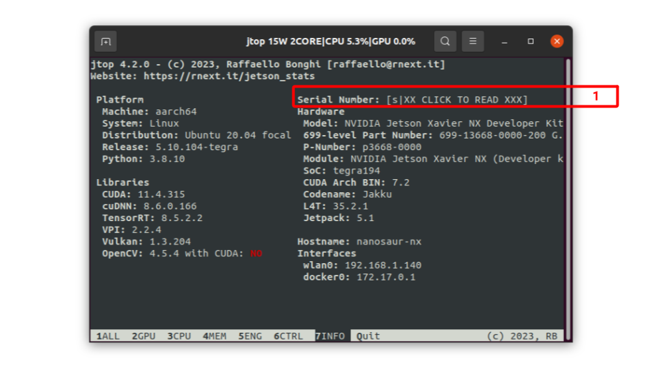

📊 jtop¶
jtop can be installed with pip
sudo pip3 install -U jetson-stats
Don’t forget to logout/login or reboot your board
Run jtop¶
Simple and fast! You can write on your shell jtop and that’s it!
jtop
Other options are available with -h option:
You can change page using left, right arrow or TAB to change page.
If you want to know how is ti works, check this menu below:
Options¶
There are different options available for jtop
Health¶
If something goes wrong, you can check the jtop status with
sudo jtop --health
This tool, will check and fix:
jetson-stats - Fix jetson-stats service
Permissions - Fix permissions for your user
variables - Check if are installed all variables Environment variables
Restore¶
If you want to restore the original board configuration you can simply write
jtop --restore
This command will restore the original configuration of:
jetson_clocksfan
nvpmodeljtop configuration
Color filter¶
This option change the red color for text and background to blue.
To enable this feature you can add this option
jtop --color-filter
or you can add in your .bashrc
JTOP_COLOR_FILTER=True
The output will be like the image below
Error-log¶
If your board is not included, jetpack missing, hardware missing, you can launch this script
jtop --error-log
This script generate a file jtop-error.log ready to be attached on your issue
Pages¶
jtop have four different pages to control your NVIDIA Jetson:
ALL Are collected all information about your board: CPUs status, Memory, GPU, disk, fan and all status about jetson_clocks, NVPmodel and other
GPU A real time GPU history about your NVIDIA Jetson
CPU A real time CPU plot of NVIDIA Jetson
MEM A real time Memory chart and swap monitor
ENG A real time list with the status of all engines
CTRL Enable/Disable jetson_clocks, nvpmodel or fan directly from here
INFO All information about libraries, CUDA, Serial Number, interfaces, …
ALL¶
In this page are summarized all information about your board.
- CPU For each CPU in this page the color is the percentage of utilization of: (summarized page 3)
Green - user
Yellow - nice
Red - system
- Memory Each bar describe the status of your device (summarized page 4)
- Memory - RAM status
Cyan - Used memory
Green - GPU shared memory
Blue - Buffers memory
Yellow - Cached memory
- Swap
Red - Swap memory
Yellow - Cached swap memory
- EMC (if available)
Frequency EMC
percentage bandwidth used at Frequency
Iram (if available)
- System In this section are collected many info about (summarized page 6)
Fan speed and RPM
Status jetson_clocks (if available)
Status NVPmodel (if available)
GPU Current GPU status (summarized page 2)
Disk Disk space utilization
GPU processes GPU processes You can sort the table clicking on each title on the page
HW Engines (If available) all engines running on your board (summarized page 5)
- Temperatures Status temperatures of your devices
If Yellow warning zone over 84 degree
If red critical zone over 100 degree
- Power Status (summarized page 6)
For each rail there are instantaneous Power and average power
The last power in bold is the total or estimated total
GPU¶
In this page the GPU status. A detailed documentation of this output is available at jtop.jtop.gpu
- GPU In this chart are collected many information about the integrated GPU, starting from the title:
iGPU (integrated GPU)
name GPU
Load percentage
Governor GPU
GPU Shared RAM Status Shared GPU. (In grey the total used memory)
- Flags GPU Flags
3D Scaling You can enable and disable the 3D scaling on your board
Railgate
Power control
TPC PG (for NVPmodel)
GPU Frequency This bar show the the minimum and maximum Frequency and on right side the current Frequency. Can be also available the GPC frequency
GPU processes GPU processes You can sort the table clicking on each title on the page
CPU¶

In this page there is the CPU status of each core. A detailed documentation of this output is available at jtop.jtop.cpu
ALL Collected status from all CPU
Core For each core there is a chart with load and governor
Model CPU model processor
CPU Frequency This bar show the the minimum and maximum Frequency and on right side the current Frequency.
MEM¶

Memory and Swap, From this page you can also enable/disable a new swap or clean the cache. A detailed documentation of this output is available at jtop.jtop.memory
- Memory It’s a chart with 10-second history of the RAM status. Each color is also described in the legend on the right. On the title is also available the Large Free Block (lfb) in 4MB
Cyan - Used memory
Green - GPU shared memory
Blue - Buffers memory
Yellow - Cached memory
- Emc & IRAM In this area is visualized a linear gauge for EMC and IRAM
- EMC (if available)
Frequency EMC
percentage bandwidth used at Frequency
Iram (if available)
- Swap In this section you can control your swap, enable a new one and also clear the cache. Each color describe a type of swap.
Cyan - zram
Yellow - swap file
Magenta - swap partition
Green - All other type of swap
For each swap is also described the priority (P5, P-2) written on the left side of the bar
Controls¶
From this page you can click or press from your keyboard:
c Clear cache
s Create new swap
b Set swap on boot
+ and - Increase and decrease swap size
If you want to remove one, you can select one from the table and press on disable
ENG¶

This page is Automatically generated from your board and is a list of all engines. All output is available also from jtop.jtop.engine
You can find different linear gauges:
This type if for engines that are not available a minimum and a maximum frequency. In this case you can read only the current frequency on right.
This engine has available the minimum and maximum frequency. In this case you can read at which current frequency is running
If there are engines from the same main group are all collected on the same line
CTRL¶
This page allow you to control your device, starting from jtop.jtop.fan, jtop.jtop.jetson_clocks and jtop.jtop.nvpmodel.
Show the fan name, PWM and if available the revolution per minute (RPM). You can also increase/decrease the speed pressing buttons [-] [+]
You can select the fan profile available on your board, more details in
jtop.jtop.fanIt is a real time chart with the current fan speed
You can enable/disable
jtop.jtop.jetson_clocksand set on boot (Note: jetson_clocks start only after 60s from up time)You can select which NVPmodel you want to use on your board. Where you see the letter “D” means is the default configuration. If the mode is colored in Amber, it means that to apply need to reboot the board.
A detailed table with Power, Volt and Current of your board. There is also teh Warning and Critical current before the board fail. More info
jtop.jtop.power
If you press a mode that need a reboot you will see a dialog message like this
You can chosse between [Force and reboot] or [Skip] the operation
Danger
If you click on [Force and reboot] the board will be rebooted immediately without any warning.
Controls¶
From this page you can click or press from your keyboard:
s Enable/Disable jetson_clocks (Note: jetson_clocks start only after 60s from up time)
e Set/Deselect jetson_clocks on board boot
+ and - Increase and decrease the NVPmodel
INFO¶
This page show all technical information about your board. This output is available jtop.jtop.board.
Compare all previous versions, now the Serial number is hidden and you can enable only clicking on the area or pressing the key s.
Uninstall¶
For a complete and manual uninstall of this package on your device there are few steps to do
Warning
You need super user to execute the commands
# Restore board configuration
jtop --restore
# Stop, disable and remove jtop.service
systemctl stop jtop.service
systemctl disable jtop.service
rm /etc/systemd/system/jtop.service
# reload services
systemctl daemon-reload
# remove jtop pipe
rm /run/jtop.sock
# Remove enviroment variables
rm /etc/profile.d/jtop_env.sh
# Uninstall python package
pip3 uninstall jetson-stats